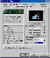

|
|
| 当前位置：电脑报电子版 > 1999 年 > 47 期 > 硬件周刊 > Voodoo3完全优化 |
| 《 Voodoo3完全优化 》 |
| Voodoo3已经够快的啦，但是对于一些游戏（尤其在高分辨率模式下）来说，游戏速度会下降到令你无法接受的地步。忠实的玩家们，别怕，我们也可以像对TNT一样对Voodoo3进行超频和优化。（注：一些优化的方法也许会对你的系统或Voodoo3不适用）
一、推荐的Voodoo3 BIOS设置 在对Voodoo3进行优化之前，请先确定你的BIOS设置是否正确。以下我建议的设置方法都不是什么官方的权威设置方案，而是凭我个人以往的经验摸索出来的设置方法。首先重新启动电脑，在自检时按下“DEL”键（或屏幕上提示的其他键）进入BIOS设置，然后查找以下几项：Assign IRQ to VGA：必须打开或设置成“AUTO”。Voodoo3很可能需要一个IRQ（中断请求），如果把这项关闭，系统很可能出现错误或者使游戏不能正确运行。 Video BIOS Cacheable：应该打开。这将很明显地提高性能。 Video BIOS Shadow：建议打开。这同样能提高性能，但如果打开后出现问题，请再关闭这一项。 VGA Palette Snoop：应该关闭。这一项已经不适用于Voodoo3了。 PCI Palette Snoop：应被关闭。原因基本同上。 C8xxxx－CBxxxx Shadow（XXXX可能是随意的十六进制数字）：应该禁止。关闭Video Shadowing因为它经常和PC里的其它设备冲突。 AGP Aperture size：这一项表示系统内存将分给AGP显卡多少作显存。因为Voodoo3不支持AGP的DIME特性，这项可以不予考虑或设置成默认值（通常是256MB）。 二、安装新驱动程序 和其他硬件一样，Voodoo3显卡应该装上最新的驱动程序，以确保有最新的软件和应用组件，为最新的游戏和程序做好准备。最新的驱动程序（截至到1999年11月10日）： Windows 95/98：http://file2.mydrivers.com/display/v3w9x－figs－oemDX7.exe Linux: http://file2.mydrivers.com/display/v3bansheelinux.zip MiniGL: http://file2.mydrivers.com/display/3dfxminigl.zip 如果想玩Quake3，你需要去下载最新的Quake3兼容驱动程序。通过一些OpenGL应用程序，可以提供更优质的画面和更好的兼容性。如果你在游戏里遇到问题，试试去下载稍早些的驱动程序和MiniGL。如果玩OpenGL游戏或应用程序时，没有最新的驱动程序，那MiniGL可能是必需的。 三、显示属性 假定你已经正确安装了驱动程序，你将在显示属性里看到“3dfx Voodoo3”一项：在桌面上右键单击选“属性”，点顶端的“设置”然后点“高级”按钮，选择“3dfx Tweaks”选项，这里有不少设置能改变游戏和应用程序的界面和应用方式。首先点“Desktop”单选框，这里只有一个选项：“Gamma”。它是调节亮度的。当你桌面看起来过亮或过暗时可以调节。 现在点“Direct3D”单选框。一个新的选项被激活：使用较高质量但较低性能的显示。我推荐在使用一个Pentium Ⅱ或更快的系统时使用该项。现在大部分图像看上去更好了，而性能表现在一个强劲系统上的要求就不那么苛刻了。最后，点“Glide/OpenGL”按钮。我推荐你按照右图进行设置。 如果你选了“Disable the splash screen option（关闭3dfx标志画面）”，你在玩Glide或OpenGL的游戏时，就将看不到开始时的3dfx图标。我个人不在乎，所以我选了。下一项是“强制贴图抖动”，我强烈推荐开启这一项，它将增加大多数游戏里的视觉效果，如果你有一个强劲的系统（PⅡ266以上），那么性能的损失就不大了。关于“贴图显存2MB限制”选项，除非你在游戏中遇到画面破碎或Glide错误，否则不必选。开启“强制三线过滤”，画面品质将明显提高，但是会造成一些游戏有异常的错误或视觉问题。如果是那样，就在玩游戏之前关了它。 调节显示栏里的其他选项，可能不会看到有什么很大的不同。别害怕去测试各种各样的不同设置，然后找出最适合你玩的游戏的一种。 四、游戏优化  1Need For SpeedⅢ/Ⅳ它和Voodoo3之间有点问题（同样还有NFS: High Stakes）。真正解决问题并不容易，但这里是我发现的最好的解决方法： 1升级NFS3/NFS：HS到最新的版本； 2选3D DEVICE SETUP； 3选Voodoo3，如果没有Voodoo3的选项，选Direct 3D Device 1。 4开始NFS3或NFS：HS； 5选单人游戏模式，进入图像设置选项； 6选择想要的分辨率，打开所有效果，试一下； 7如果无法运行，试用以前的驱动程序； 8可以下载一个auto－patcher 来帮助更新NFS3； 3dfx也有一个搜集了很多补丁的FTP站点，然而，它们并不常更新，所以不少文件都是旧的：ftp://ftp.3dfx.com/pub/game_patches/ 2HALF－LIFE 就像Quake2一样，HALF－LIFE只需要很少的东西。首先要考虑的是驱动程序。如果HALF－LIFE看起来不对劲或跑得不正确，应该试试装旧的驱动程序，至少Voodoo3所配的光盘中的驱动程序就比较旧。 3Quake2 如果Quake2 看起来或玩时完全不正常，而又装了最新的驱动程序，试试安装老版本的驱动程序。 进入Quake2\Baseq2\文件夹，如果看到一个叫“Autoexec.cfg”的文件，那就是说已经有了一个Autoexec。如果想编辑它，或创建一个新的，到Quake2 Autoexec Creator里创建一个。这个Autoexec Creator 将让你优化并自定义Quake2里几乎每一个“视觉/声音/音乐”方面的选项。你能使游戏看起来更好，更亮，更暗，或者你想要的任何方面，甚至明显提高速度。 到这里来看看Quake2 Autoexec Creator：http://www.tweak3d.net/autoexec/ 这里还有针对SIN（原罪）和HALF－LIFE（半条命）的Autoexec Creators。 4Quake3 许多人告诉我Q3Test 在Voodoo3上跑得很差。但在我的PⅡ266＋Voodoo3 3000系统上，它工作得很棒！这里是我对用Voodoo3玩Quake3的玩家的建议： 首先，确定你已经安装了最新的驱动程序！启动Quake3并按ESC键选择系统配置（System Configuration）。选图像选项（Graphics Options），选择默认“OpenGL”（Default OpenGL ）作为渲染引擎。然后试着将Texture Detail （贴图细节）滑动条滑到最右。这将提高游戏总体的效果，包括性能。 我强烈推荐你关闭dynamic lighting（动态灯光效果），因为它使游戏变得很难看清东西而且占用系统资源太多。如果你需要更好的性能表现，你应该开启“Simple item”模式。这将关掉武器的半透明效果而提高其他诸如“Quad damage”的效果，将明显提高性能。 我同时建议你把分辨率控制在1024×768以下，以确保较快的速度。如果设置在高分辨率下一点都没慢，那么就调高点。想得到更多Quake3优化，请访问：http://www.voodooextreme.com/revered 5Uureal Unreal几乎能在Voodoo和Voodoo2上完美地运行。然而众所周知，在Voodoo3上会有麻烦。我建议你装完Unreal后马上运行，当它问你是否有3dfx卡时，选“YES”，然后你应该去下载最新的补丁，重新运行游戏。要知道更多的关于优化调节Unreal功能的信息（和最新的补丁链接），请到Unreal Tweak Guide：http://www.tweak3d.net/tweak/unreal/ 五、超频Voodoo3 在开始超频前，要确定你有超频显卡的知识。幸运的是，Voodoo3很好超。我听说过有人把Voodoo3 2000（143MHz）一路超到185MHz，有的还更高呢。我曾把我自己的Voodoo3 3000（166MHz）超频到200MHz。当然，这要靠一个或几个风扇和一些其他的制冷方法。有几种软件能超频Voodoo3，有一款比别的都好（我的观点），因为它使用起来很方便而且很容易调节。Gary Peterson的Voodoo3 Overclocker 是一款很小而且免费的组件，提供方便的调节，你可以通过控制面板里的显示属性来调节。它允许你在120MHz和200MHz之间调节任意一种Voodoo3显卡的时钟频率。你可以在http://www.3dfiles.com/utility/voodoo3overclocker.shtml下载它，文件大小是110K。安装这个软件也很容易，下载后，只需要解压后运行setup.exe。另一个值得考虑的软件是online Voodoo3 overclocking util(http://pcweb.hardwarecentral.net/arct/v3.html)。它处理起来很简单，所有工作通过Internet Explorer 在线完成（目前还没有对Netscape提供支持）。 进入显示属性菜单，然后选Voodoo3 Overclocker 栏。每一次少调节一点频率值，运行一些测试软件或游戏来确保这个速度是安全的。我推荐使用Q3Test 和Unreal，这些游戏能真实地显示显卡到底能达到多高的频率，别一上来就尝试200MHz。如过你的电脑死机了，这不是大问题。很简单，重新启动就好了。如果回不到Windows了，重新启动并在“Starting Windows”时按F5键，引导到Windows安全模式，可以在安全模式下降低速度。 在实验之后，将找到一个最稳定的速度了。如果你的显卡超频了，我强烈建议给显卡附加上另外一个风扇或寻找其他的制冷途径。这是因为Voodoo3运行在极限高温下，没有添加额外的散热设备时，我把我的Voodoo3 3000超到178MHz（默认是166MHz），而相当稳定，然而，几个小时后，电脑死机了。而在风扇的帮助下，Voodoo3 3000达到了190MHz而只比在166MHz时热一点。 （辽宁 王泉） |
| 下载本期推荐软件 | 页 首 |
| 《电脑报》版权所有，电脑报网站编辑部设计制作发布 |